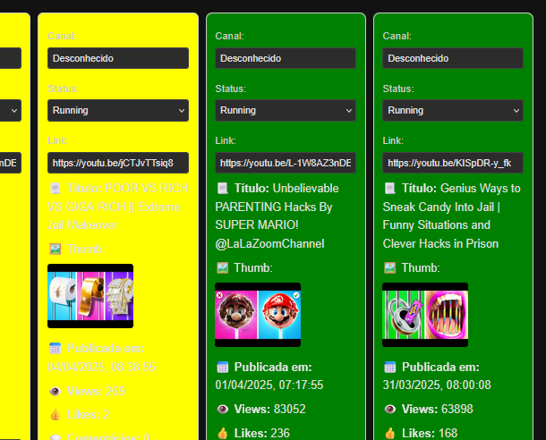

Web application developed to monitor multiple YouTube livestreams in real time using a centralized dashboard. Designed to avoid the need to manually open YouTube Analytics for each channel.
The solution displays live metrics like views, performance goals, and stream durations. It was built using React and TypeScript on the frontend, and Node.js + Express on the backend, with local data persistence using SQLite3.
I also developed a custom REST API with multiple secure endpoints, protected with CORS, which feeds the app with live and high-performance data.
Technologies used:
Status: Actively used tool that increases productivity by eliminating manual analysis steps across multiple simultaneous YouTube livestreams.
← Back to portfolio